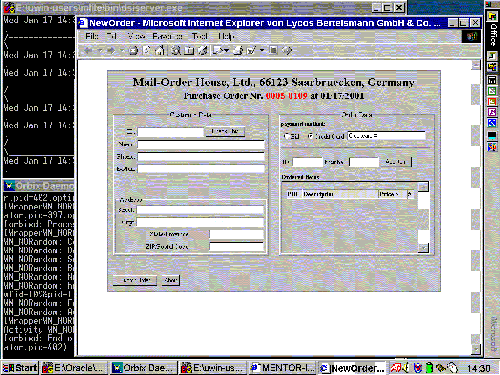
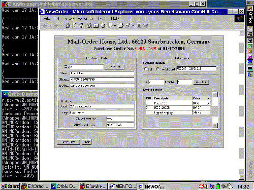

| Next Step |
Activity NewOrder
After clicking the "Accept" button on her worklist, Jenny gets the form of the activity NewOrder on her screen and can do her job ...
 |
| (click on figure to enlarge) |

... which is filling the form.
The activity NewOrder is implemented as a Dynamic HTML (DHTML) application. In general there are two approaches to handle XML on the client side using Microsoft IE 5.0. First, the XML data can be transformed by the stylesheet engine of the browser into DHTML after downloading XML and XSL. Alternatively, a client application can be implemented in DHTML directly. In the latter case so-called "XML data islands" [1] can be defined within a DHTML document, in order to separate the input data from the presentation. An XML data island can easily be bound ("Data Binding" [1]) to an HTML element as a dynamic source object (DSO) to be visualized within the DHTML document. The main advantage of using this Data Binding is that the HTML element will be updated automatically when the corresponding DSO has changed. Once initialized in the browser, the DHTML document for the NewOrder activity contains an empty XML data island. For convenience the user may simply input the customer id and click on the "Check This" button.
Unlike customer data, items can be added to the "shopping cart" several times. To avoid repeatedly checking item ids by calling the XML mediator, we prefetch relevant parts of the product catalog into the browser by defining an XML data island. All manipulations on the DHTML page such as adding items are processed locally without involving any servers or the XML mediator.
 |
| (click on figure to enlarge) |

Now, Jenny can submit the form and send the data to the XML mediator simply by clicking the "Submit Order" button ...
References
[1] Microsoft Developer Network (MSDN): XML Developer Center.
| Next Step |